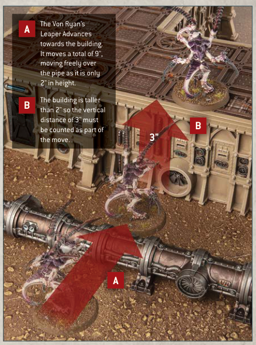
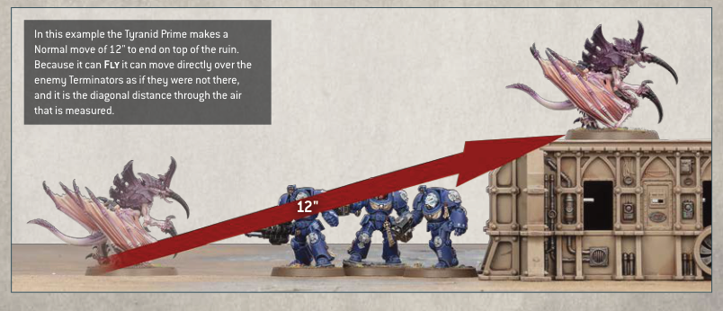

## MOVING OVER TERRAIN
Warhammer 40,000 battlefields are strewn with a wide variety of obstacles, structures and detritus collectively known as terrain features (see pages 44-48). When a model makes any kind of move, it can be moved over a terrain feature but not through it (so models can't move through a wall, for example, but can climb up or over it).
A model can be moved over terrain features that are 2" or less in height as if they were not there. A model can be moved vertically in order to climb up or down any terrain features that are taller than this, counting the vertical distance up and/or down as part of its move. Models cannot end any kind of move mid-climb - if it is not possible to end the move as a result, that move cannot be made.
- Models can move freely over terrain features 2" or less in height.
- Models cannot move through terrain features taller than 2", but can climb up and down them.

A The Von Ryan's Leaper Advances towards the building. It moves a total of 9", moving freely over the pipe as it is only 2" in height.
B The building is taller than 2" so the vertical distance of 3" must be counted as part of the move.
## FLYING
If a model can Fly, then when it makes a Normal, Advance or Fall Back move, it can be moved over enemy models as if they were not there, and can be moved within Engagement Range of enemy models when making such a move. Note this also means that Monster and Vehicle models that can Fly can be moved over other Monster and Vehicle models when making such a move. However, models that can Fly cannot end their move on top of any other models or within Engagement Range of any enemy models.
When a model that can Fly starts or ends a move on a terrain feature, instead of measuring the path it has moved across the battlefield, you instead measure its path 'through the air', as shown in the diagram below.
- Fly models can move over enemy models when they make a Normal, Advance or Fall Back move.
- Fly models that start or end a move on a terrain feature measure distance moved through the air when they make a Normal, Advance or Fall Back move.

In this example the Tyranid Prime makes a Normal move of 12" to end on top of the ruin. Because it can Fly it can move directly over the enemy Terminators as if they were not there, and it is the diagonal distance through the air that is measured.